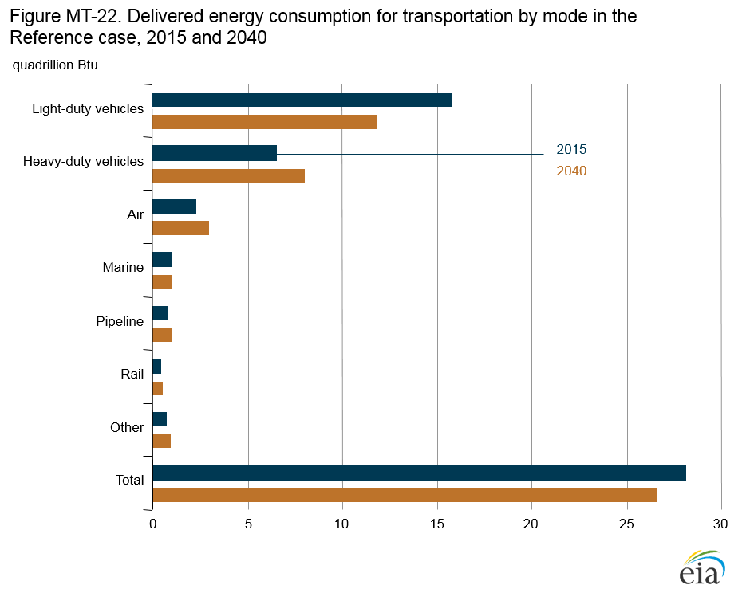
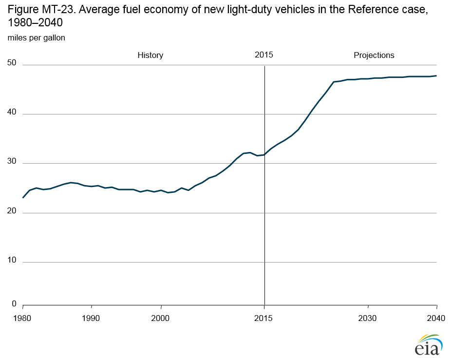
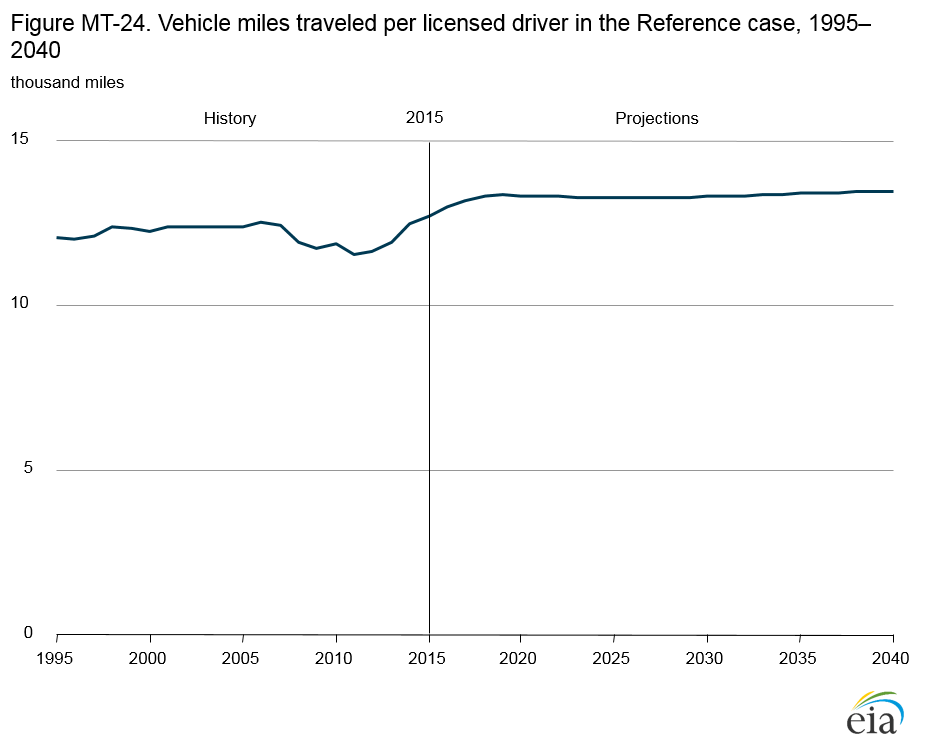
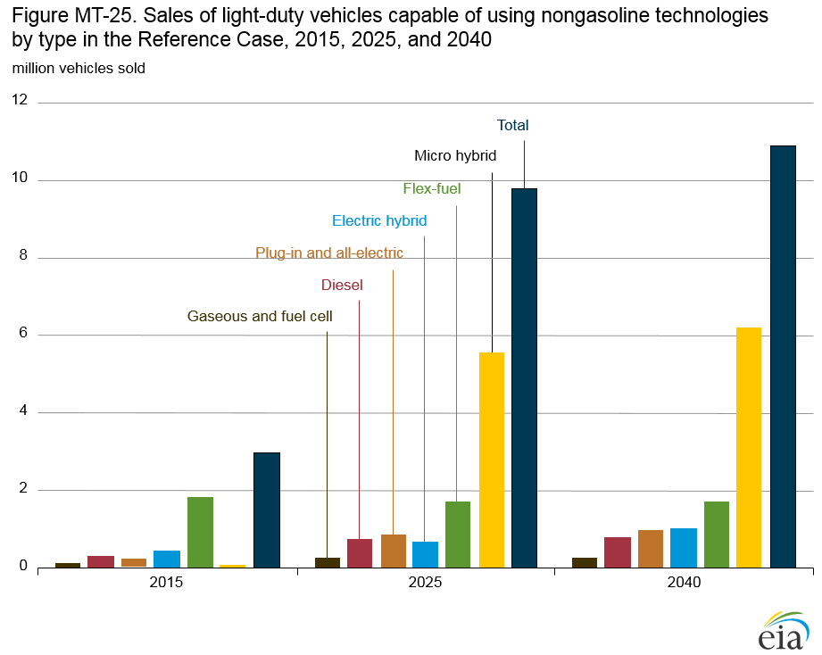
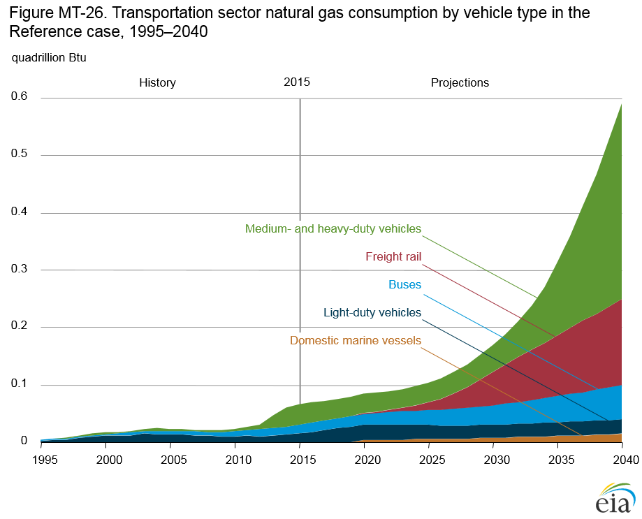

Annual Energy Outlook 2016
Full Release Date: September 15, 2016 | Next Release Date: January 2017 | full report
Market Trends: Transportation sector energy demand
Higher light-duty vehicle fuel economy reduces transportation energy consumption after 2018
In the Reference case, transportation sector delivered energy consumption increases from 28.1 quadrillion British thermal units (Btu) in 2015 to 28.6 quadrillion Btu in 2017, declines to 26.1 quadrillion Btu in 2033, then rises to 26.6 quadrillion Btu in 2040. Transportation energy consumption increased by 1.6%/year on average from 1995 to 2007 (to 28.6 quadrillion Btu), then fell to 26.0 quadrillion Btu in 2012 as economic recession reduced demand for freight and passenger transportation. After 2012, growth in demand for transportation services offset efficiency improvements. The decline after 2017 in the Reference case results from a drop in light-duty vehicle (LDV) energy use with the implementation of new corporate average fuel economy standards, more than offsetting increases in energy use for heavy-duty vehicles (HDVs), aircraft, marine vessels, pipelines, and rail. The Reference case does not include the proposed Phase 2 standards for trucks (see discussion in the AEO2016 Issues in focus section), which if finalized would further reduce transportation energy use.
LDV energy demand falls sharply in the Reference case, from 15.9 quadrillion Btu in 2015 to 11.8 quadrillion Btu in 2040, as higher fuel economy more than offsets increases in LDV travel. Although new fuel efficiency and greenhouse gas emissions standards for HDVs took effect in 2014, energy use by HDVs (including tractor trailers, buses, vocational vehicles, and heavy-duty pickup trucks and vans) grows from 6.6 quadrillion Btu in 2015 to 8.1 quadrillion Btu in 2040 in the Reference case, as travel demand increases with economic growth.

figure data
Because growth in personal air travel is not fully offset by
increases in aircraft fuel efficiency, aircraft energy consumption
increases at a faster rate than other transportation modes,
from 2.4 quadrillion Btu in 2015 to 3.0 quadrillion Btu in 2040s.
Energy consumption by marine vessels also grows, as increased
international trade boosts demand for shipping (despite a
modest decline in domestic shipping), and rising incomes
increase demand for recreational boating. Pipeline energy use
is tempered as more natural gas is produced closer to enduse
markets. With travel demand growing more rapidly than
efficiency improvements, energy consumption for freight and
passenger rail travel also increases slightly.
Corporate average fuel economy and greenhouse gas emissions standards boost light-duty vehicle fuel economy
In the Reference case, transportation sector delivered energy consumption increases from 28.1 quadrillion British thermal units (Btu) in 2015 to 28.6 quadrillion Btu in 2017, declines to 26.1 quadrillion Btu in 2033, then rises to 26.6 quadrillion Btu in 2040. Transportation energy consumption increased by 1.6%/year on average from 1995 to 2007 (to 28.6 quadrillion Btu), then fell to 26.0 quadrillion Btu in 2012 as economic recession reduced demand for freight and passenger transportation. After 2012, growth in demand for transportation services offset efficiency improvements. The decline after 2017 in the Reference case results from a drop in light-duty vehicle (LDV) energy use with the implementation of new corporate average fuel economy standards, more than offsetting increases in energy use for heavy-duty vehicles (HDVs), aircraft, marine vessels, pipelines, and rail. The Reference case does not include the proposed Phase 2 standards for trucks (see discussion in the AEO2016 Issues in focus section), which if finalized would further reduce transportation energy use.
LDV energy demand falls sharply in the Reference case, from 15.9 quadrillion Btu in 2015 to 11.8 quadrillion Btu in 2040, as higher fuel economy more than offsets increases in LDV travel. Although new fuel efficiency and greenhouse gas emissions standards for HDVs took effect in 2014, energy use by HDVs (including tractor trailers, buses, vocational vehicles, and heavyduty pickup trucks and vans) grows from 6.6 quadrillion Btu in 2015 to 8.1 quadrillion Btu in 2040 in the Reference case, as travel demand increases with economic growth.

figure data
Because growth in personal air travel is not fully offset by
increases in aircraft fuel efficiency, aircraft energy consumption
increases at a faster rate than other transportation modes,
from 2.4 quadrillion Btu in 2015 to 3.0 quadrillion Btu in 2040s.
Energy consumption by marine vessels also grows, as increased
international trade boosts demand for shipping (despite a
modest decline in domestic shipping), and rising incomes
increase demand for recreational boating. Pipeline energy use
is tempered as more natural gas is produced closer to enduse
markets. With travel demand growing more rapidly than
efficiency improvements, energy consumption for freight and
passenger rail travel also increases slightly.
Miles traveled per licensed driver grows throuigh 2018 and then levels off
Demand for personal vehicle travel, measured as annual
vehicle miles traveled (VMT) per licensed driver, continues
to grow beyond 2015 levels in the AEO2016 Reference case,
from 12,700 miles in 2015 to 13,300 miles in 2018, remains at
about 13,300 until 2033, and then increases again to 13,500 in
2040 (Figure MT-24). The major factors influencing personal
vehicle travel include motor gasoline prices, personal income,
vehicle fuel efficiency, travel patterns, driving population, and
employment rates.

figure data
The number of licensed drivers grows by an average of 0.7%/year from 2015–40, as the employment rate of the licensed driver population (the employed, nonfarm population ages 16 and over) increases by an average of 0.7%/yr from 2015–40. Total light-duty VMT increases in the Reference case to 3.4 trillion in 2040—a 25% increase from 2015—partly as a result of 18% overall growth in the number of licensed drivers, from 217 million in 2015 to 255 million in 2040.
Although vehicle sales decline between 2017 and 2022 before generally increasing through 2040, the number of vehicles per licensed driver stays constant at 1.1 from 2015–40. Motor gasoline prices fall from 2015 levels and do not exceed that level again until 2019, while real personal disposable income per licensed driver increases by 47% from 2015–40. Income growth and lower motor gasoline prices, combined with increasing fuel economy for both light-duty cars and light trucks, contribute to the increase in VMT per licensed driver throughout the projection.
Sales of vehicles using nongasoline technologies triple from 2015 to 2040
Light-duty vehicles (LDVs) that use diesel, alternative-fuel, hybrid-electric, or all-electric systems play a significant role in meeting more stringent greenhouse gas emissions and corporate average fuel economy (CAFE) standards in the AEO2016 Reference case, with sales increasing from 18% of all new LDV sales in 2015 to 61% in 2040. Micro hybrid vehicles, defined here as conventional gasoline internal combustion engine vehicles with micro hybrid systems that manage engine operation at idle, represent 34% of new LDV sales in 2040 (Figure MT-25). Flex-fuel vehicles (FFVs), which can use blends of up to 85% ethanol, represent about 10% of all new LDV sales in 2040. Current incentives for manufacturers selling FFVs, which are available in the form of fuel economy credits earned for CAFE compliance, expire at the end of 2019. As a result, the FFV share of LDV sales rises through 2019 and then remains flat through the rest of the projection.

figure data
Sales of hybrid electric and all-electric vehicles that use stored electric energy for motive power grow substantially in the Reference case. Gasoline- and diesel-electric hybrid vehicles account for 5% of total LDV sales in 2040. Plug-in hybrid and all-electric vehicles account for 5% of total LDV sales and 9% of total sales of vehicles using diesel, alternative-fuel, hybrid, or all-electric systems in 2040.
The diesel vehicle share of total LDV sales increases slightly from 2015–40 in the Reference case, from 2% to 4%. Lightduty gaseous and fuel cell vehicles account for less than 2% of new vehicle sales because of limited fueling infrastructure and the high incremental costs of the vehicles.
Natural gas use for transportation fuel grows but still makes up a modest share of total use
Unlike natural gas applications in other demand sectors, consumption of natural gas by rail, marine, and road vehicles in the transportation sector—in both dedicated and dualfueled engines—generally requires additional processing to meet energy storage requirements on vehicles, either as compressed natural gas (CNG) or liquefied natural gas (LNG). In the AEO2016 Reference case, demand for natural gas in the transportation sector grows from 66 trillion British thermal units (Btu) in 2015 to 591 trillion Btu in 2040 (Figure MT-26). However, natural gas still accounts for just 2% of the sector’s total delivered energy consumption in 2040, or slightly more than half of the 1,069 trillion Btu of natural gas consumed in pipeline transport operations in 2040.

figure data
Medium-duty and heavy-duty vehicles—including tractor
trailers, vocational vehicles, pickups, and vans with gross
vehicle weight rating of 10,001 pounds or more—become the
largest consumers of CNG and LNG in the Reference case, increasing from 35 trillion Btu in 2015 to 342 trillion Btu in
2040. Most of the increase occurs after 2025, when natural
gas is marketed at a steadily increasing discount compared to
petroleum fuels. Initially, natural gas is used primarily as CNG
in medium-duty trucks, but over time it is used increasingly as
LNG to fuel heavy-duty trucks (primarily tractor trailers)—a
relatively energy-dense storage, high-mileage application
in which the fuel cost savings of LNG offset the significant
incremental capital costs of LNG vehicles.
LNG energy consumption by freight rail locomotives grows to
150 trillion Btu in 2040, when it accounts for 30% of total freight
rail energy consumption, with natural gas fuel cost savings
offsetting the incremental capital costs of LNG locomotives.
CNG and LNG energy demand for transit, intercity, and school
buses also grows, from 16 trillion Btu in 2015 to 60 trillion Btu
in 2040, primarily as a result of high CNG adoption rates for
transit buses, which account for 95% (57 trillion Btu) of the
natural gas used by buses in 2040. Use of CNG in light-duty
vehicles and LNG in marine vessels remains relatively minor, at
24 trillion Btu and 15 trillion Btu in 2040, or 0.2% and 2.0% of
each mode’s energy consumption, respectively.
In This Section
- Higher light-duty vehicle fuel economy reduces transportation energy consumption after 2018
- Corporate average fuel economy and greenhouse gas emissions standards boost light-duty vehicle fuel economy
- Miles traveled per licensed driver grows through 2018 and then levels off
- Sales of vehicles using nongasoline technologies triple from 2015 to 2040
- Natural gas use for transportation increases but remains a small share of total transportation energy
Interactive Table Viewer ›
Provides custom data views of all AEO2016 cases. All available cases can be charted and the data for them downloaded.